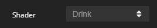
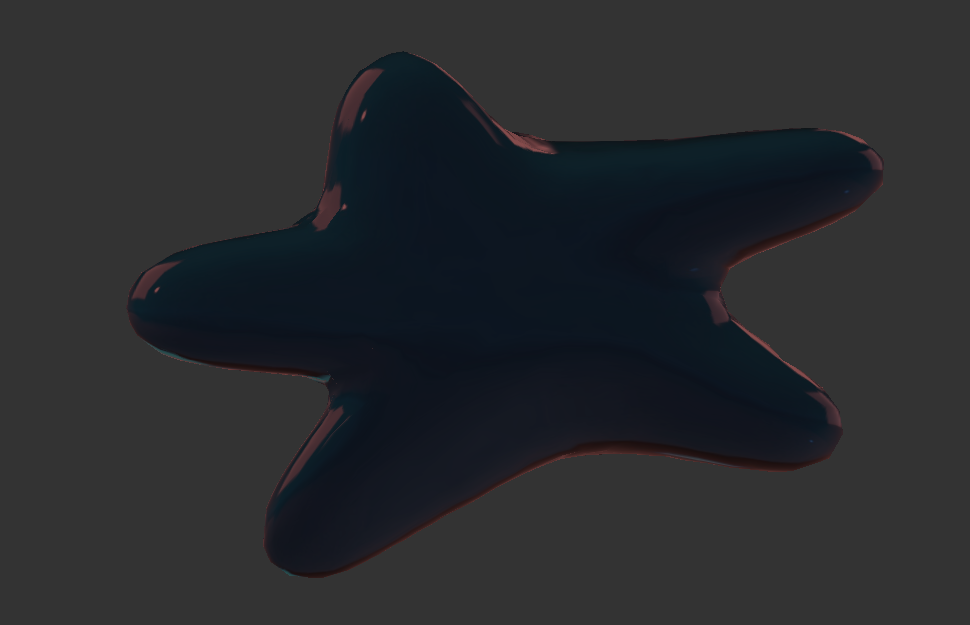

Intro To SculptFab
In my spare time, I like to use a sculpting website called SculptFab! This site lets you morph a ball of clay into a different shape, texture, color, and more! This site is super good for making characters for 3D games, animating in amateur movies, etc.
Textures

There are many different textures to choose from for your ball of clay. One of my favorites to use is called "Drink". That texture gives the ball a very glossy and sleek look. It is very good for creating glass, or something with a jelly-like texture/look, etc.
Brushes
There are many cool features/brushes in SculptFab. Some commonly used ones are Flatten and Inflate, while some more interesting ones are Rotate and Crease. I really like to use Smooth, because it's really good for flattening things out more softly than the actual Flatten tool.
Miscellaneous
In my last camp, Virtual Worlds, we created little worlds and characters to go into them. The program we used was actually SculptFab! SculptFab enabled me to create a HUGE bread that I put in my big beach along with my main character and another person.
Modeling

Actual modeling in SculptFab is pretty easy. If you want to stretch or pull something, you're best off using the drag tool. If you want to make something swirly, use rotate! All of the features are very easy to use, but result with a professional look, too.
Thank you for visiting my webpage! Be sure to check out SculptFab